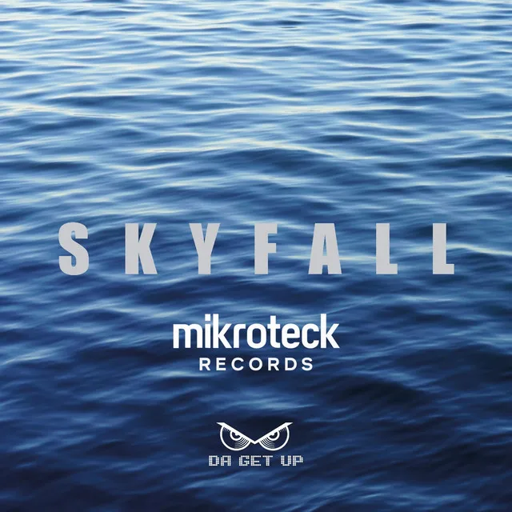
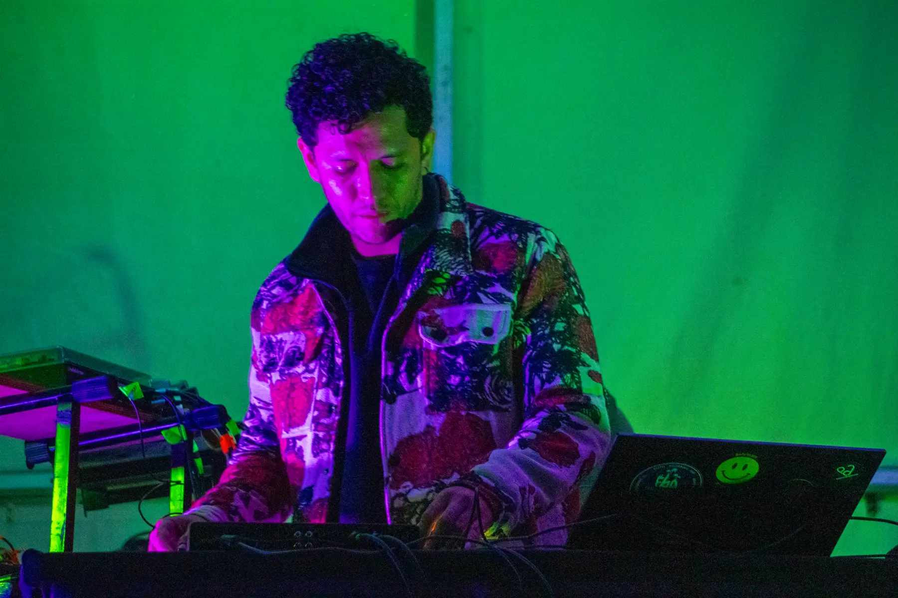
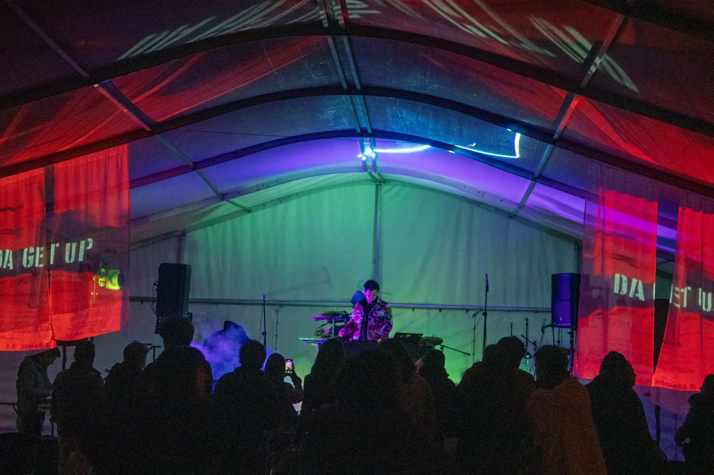
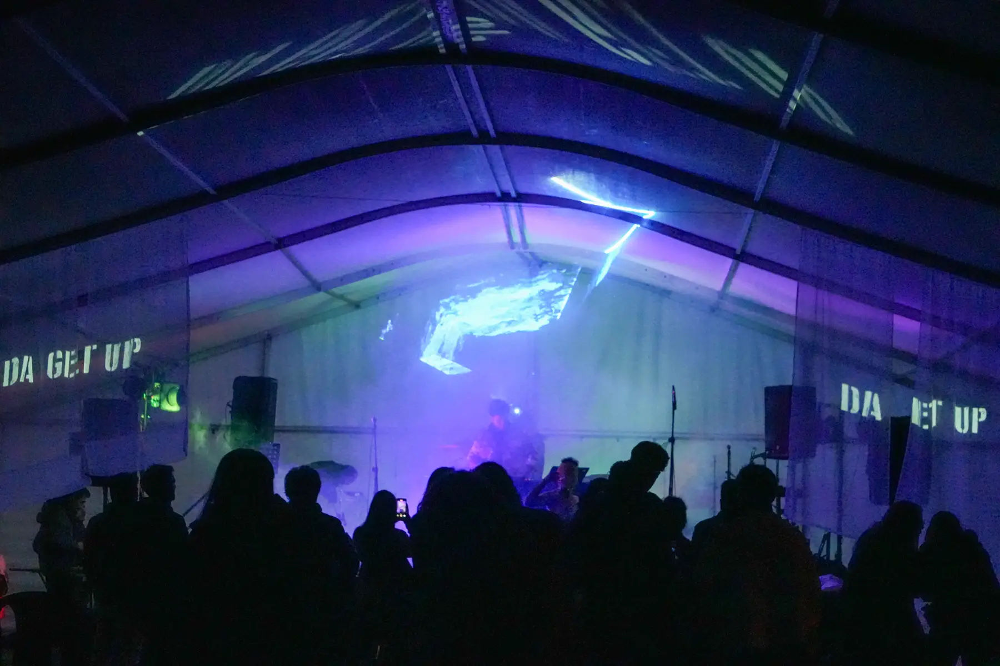
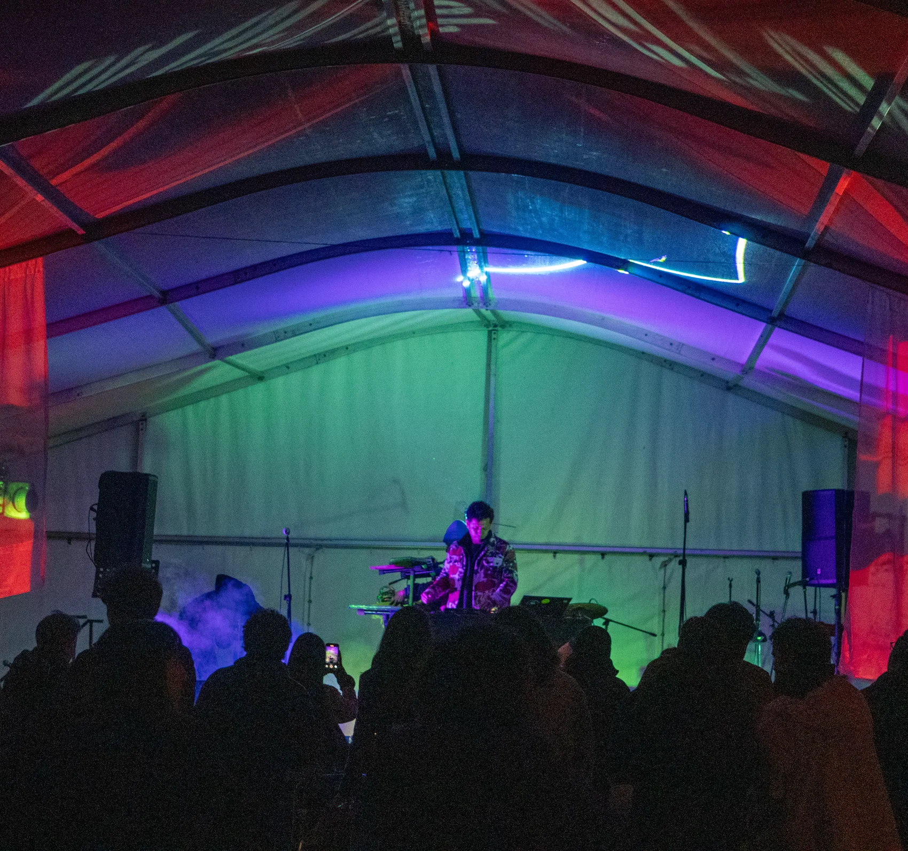

Deep house
hipnótico,
hecho para
la pista.

Da Get Up
Mikro Teck Records · Hollywood, FL

Deep house
hipnótico,
hecho para
la pista.
Deep house
hipnótico.
Hecho para
la pista.

Skyfall también suena en vivo: secuencias, sintetizadores y controladores tocados en tiempo real.

En Spotify · link en bio
Medellín Takeover
Live act · DJ set · Showcase
Booking → +57 312 576 6056
Mikro Teck Records · Hollywood, FL
6:34
de deep house
hipnótico.
¿Programas una noche
en Medellín?
Live act · DJ set · Showcase
Clubes · colectivos · espacios culturales


Da Get Up
Medellín
Takeover
Da Get Up
Medellín
Takeover
13—26.11
13—26.11

Venues
y fechas
muy pronto
Venues
y fechas
muy pronto

Quién es
Da Get Up

Voz · synths · Ableton
Repertorio propio
House · indie dance
Club · festival
Deep house
6:34
30.04.2026
Mikro Teck Records · Hollywood, FL

El Andar
Próximamente
Bajo la
superficie
Skyfall
Out nowMikro Teck Records
Owl Frequencies
Video oficial